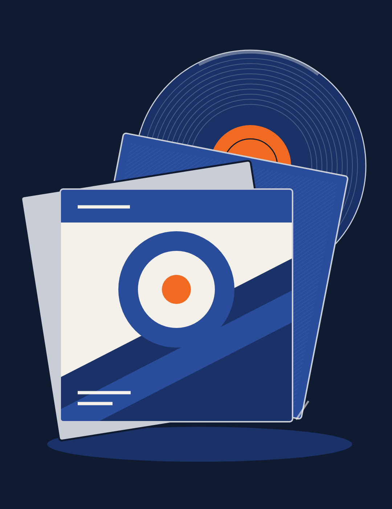
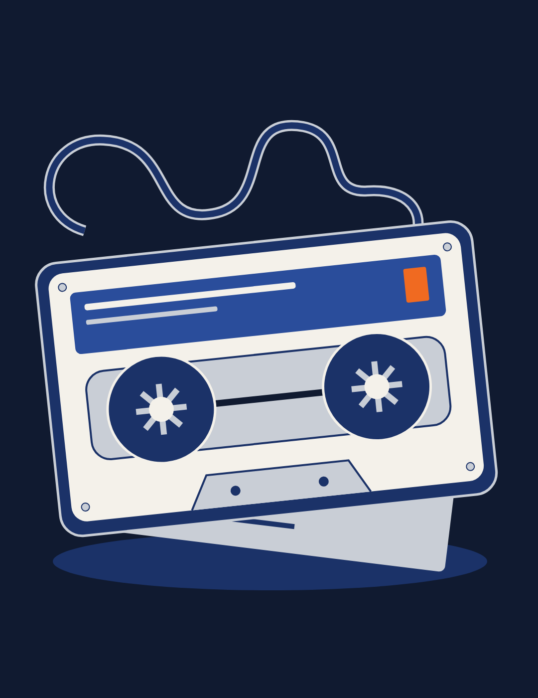
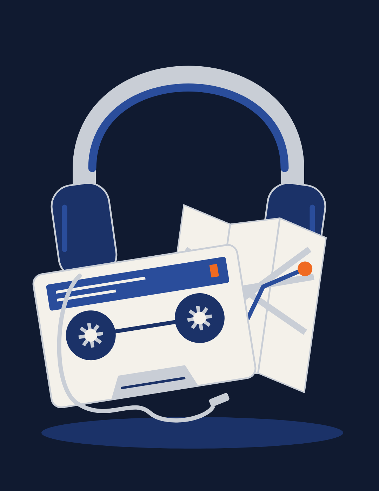

01: La tua raccolta
8–20 secondi
Una piccola discoteca personale. Il vinile e le copertine raccontano il piacere di possedere e scegliere la propria musica.
Nel video: «Dal tuo server Navidrome» → «Scegli cosa ascoltare».
Tre illustrazioni originali realizzate localmente, nei colori dell'app: blu notte, blu scocca, crema, argento e un accento arancione. Sostituiscono liste e dialoghi parziali; le riprese reali del player a cassetta restano il filo conduttore.
Sono disegni vettoriali originali, non fotografie o immagini generate da un modello AI. Clicca sulle immagini per aprirle a piena risoluzione.

Una piccola discoteca personale. Il vinile e le copertine raccontano il piacere di possedere e scegliere la propria musica.
Nel video: «Dal tuo server Navidrome» → «Scegli cosa ascoltare».

Una cassetta protagonista con etichetta e cartoncino: l'idea di scegliere una sequenza e conservarla, invece di mostrare un dialogo dell'app.
Nel video: «Crea la tua mixtape» → «Salvala come playlist».

Cuffie, cassetta e una mappa: musica da portare con sé. Da 45 secondi ritorna il player reale in riproduzione, conservato dalla versione precedente.
Nel video: «Scarica la tua playlist» → «La tua musica. Anche offline».